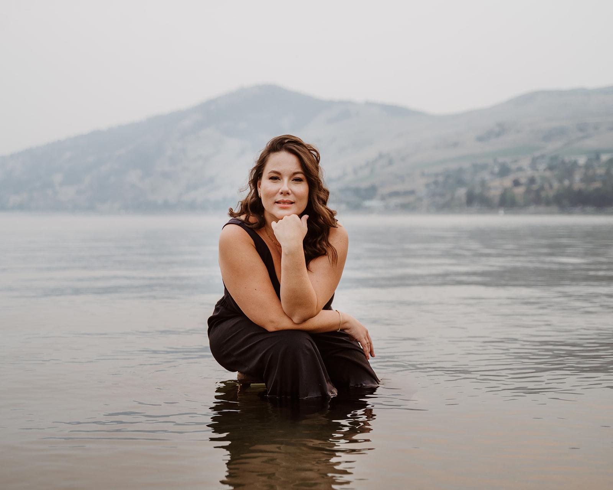

Justine Fraser
Justine Fraser is an international dance educator, choreographer, adjudicator, and professional performer from British Columbia, with a diverse background in ballet, contemporary, modern, and neo-classical dance. She began her pre-professional training at Pacific Dance Arts under Master Teacher Li Yaming and continued her studies through scholarship opportunities at Boston Ballet School, Royal Winnipeg Ballet School, Alonzo King LINES Ballet, and the Banff Centre for Arts and Creativity.
Justine continued her training at Alonzo King LINES Ballet in San Francisco, expanding her studies to include Horton Technique, Gyrokinesis, Percussion, Choreographic Process, and Neo- Classical ballet. As a professional performer, she has worked with Ballet Jörgen Canada, Dawson Dance SF, Alonzo King LINES Ballet, BalletX in Philadelphia, and Coastal City Ballet, performing works by acclaimed choreographers and touring extensively throughout North America and internationally.
With more than 15 years of teaching experience, Justine has worked with pre-professional, professional, and advanced dancers across Canada, the United States, Mexico, Australia, and Brazil. She is a Registered Teacher with the Royal Academy of Dance, a Certified Teacher with the American Academy of Ballet and Progressing Ballet Technique, and a Level 1 Certified Adjudicator through The Dance Leadership Institute. She also holds recurring international faculty positions with dance institutions in Mexico and Australia.
Justine has served as Resident Choreographer and Rehearsal Director with Coastal City Ballet and Guest Artistic Staff with Ballet Kelowna. In 2026, she launched Beyond Ballet, an education platform connecting dancers and studios with specialized training, mentorship, choreography, performance opportunities, and the international dance community.
Passionate about technical excellence, artistic individuality, and the development of the whole dancer, Justine is committed to creating environments where dancers can grow as both artists and individuals. She looks forward to sharing her experience and passion for dance with the dancers at this year’s festival.